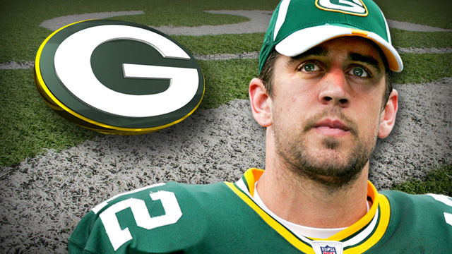

GO Pack GO!
I love the Green Bay Packers! They are going all the way this year baby and you know it! I have been a die hard packers fan since birth and will always will be a cheese head.
Some Facts
The Green bay packers have been world champions 13 times. Which is the most champoinships in the NFL. They won in 1929, 1930, 1931, 1936, 1939, 1944, 1961, 1962, 1965, 1966, 1967, 1996, and 2010. In those championships the packers won the first three Super Bowls and the super bowl trophy ended up being called after the packers head coach - Vince Lombardi.
Key Players

Aaron Rodgers: Quarter Back - #12
Clay Matthews: Linebacker - #52
Jordy Nelson: Wide Reciever - #87
Eddie Lacy: Running Back - #27
Randall Cobb: Wide Reciever - #18